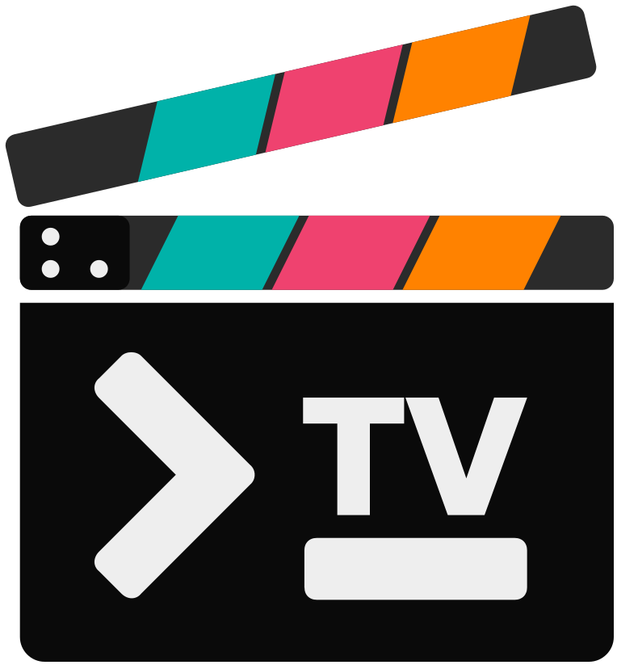
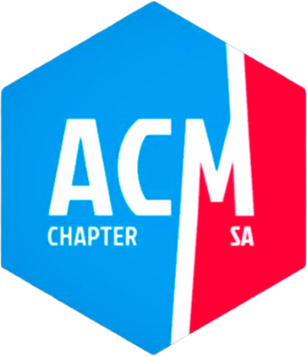

AI April · who made it
Geeks && {...}

Alamo Tech Collective
Alamo Python
ACM San Antonio Greater Gaming Society
Greater Gaming SocietyFind themdevsa.community/buildingtogether/geeks-and-drinks
Spotlight 02 · July
VelociCode 2.
A month-long game jam from ACM San Antonio and Greater Gaming Society: workshops, a playtest night, and a community showcase on August 1.
VelociCode 2 · who made it
ACM San Antonio
Greater Gaming SocietyUnreal Engine SA
Alamo Tech Collective
Find themdevsa.community/buildingtogether/acm-sa
Spotlight 03 · ACM UTSA
RowdyHacks & RowdyCyberCon.
UTSA’s students run RowdyHacks, the largest hackathon in San Antonio, and RowdyCyberCon.


ACM UTSA · who made it
ACM UTSARowdyCyberConFind themdevsa.community/buildingtogether/acm-utsa
Spotlight 04 · Sept 28 – Oct 2
SA Startup + Tech Week.
Five days of San Antonio’s founders and builders, with Geekdom. DEVSA brought the tech track: the groups, the talks and its own rooms.